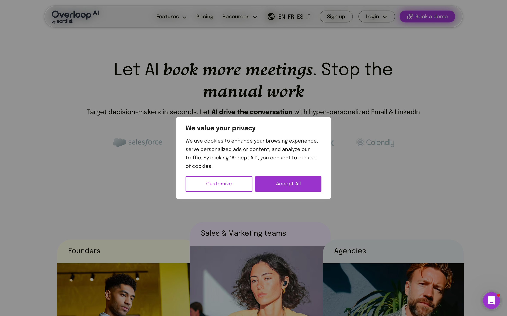
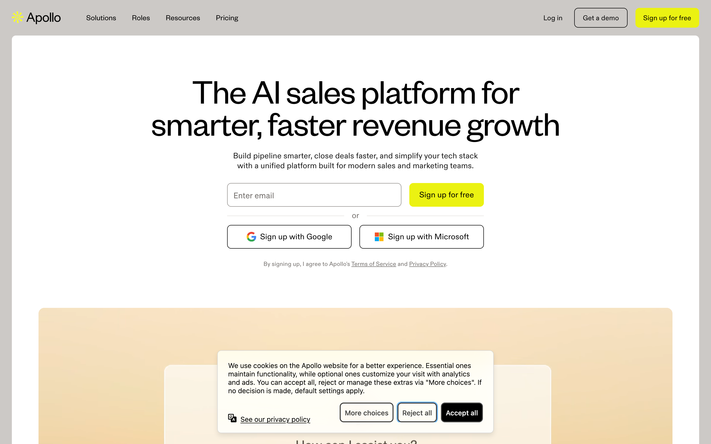
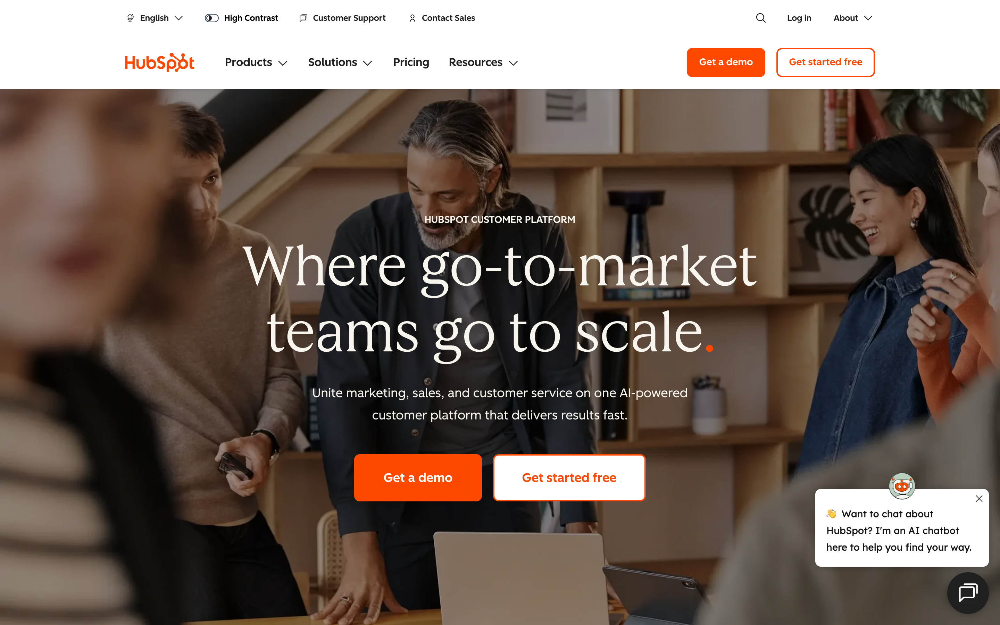

The best lead generation tools for B2B teams in 2026 are Overloop AI (450M+ contacts, AI personalization, multi-channel sequences starting at $49/user/month), Apollo.io (database + outbound sequencing, free tier), ZoomInfo (enterprise intent data), Clearbit (inbound enrichment), LinkedIn Sales Navigator, Hunter (email finding + verification), Lemlist (cold email deliverability), Clay (enrichment workflows), HubSpot Marketing Hub (inbound capture), and Chili Piper (instant meeting routing).
Below we break down what each tool does best, where it fits in a B2B pipeline, and the kind of team that gets the most value from it. Use the comparison table to shortlist, then read the sections that match your motion.
| Tool | Best For | Core Features | Key Integrations | Pricing Range | Ideal Team Size |
|---|---|---|---|---|---|
| Overloop AI | Outbound prospecting with AI personalization | Lead sourcing, email verification, email + LinkedIn sequences, analytics | Salesforce, HubSpot, Pipedrive, Zapier, Slack | Varies by plan | SMB to mid-market |
 Apollo.io Apollo.io | All-in-one database + outbound sequencing | Prospecting database, enrichment, sequences, dialer (plan-dependent) | Salesforce, HubSpot, Gmail, Outlook | Free to custom | SMB to mid-market |
 ZoomInfo ZoomInfo | Enterprise data, intent, and enrichment | Contact and company data, intent signals, enrichment, workflows | Salesforce, HubSpot, Marketo, Outreach, Salesloft | Custom | Mid-market to enterprise |
| Inbound and PLG enrichment and routing | Firmographic enrichment, form shortening, lead scoring signals | HubSpot, Salesforce, Segment | Custom | SMB to enterprise | |
| LinkedIn Sales Navigator | Account-based prospecting on LinkedIn | Advanced search filters, lead and account lists, buying signals | Salesforce (Sales Navigator for Salesforce), HubSpot | Per-seat | Any size |
| Hunter | Fast email finding and verification | Email finder, domain search, email verification, campaigns (plan-dependent) | Google Sheets, HubSpot, Salesforce, Zapier | Free to paid tiers | Solo to SMB |
| Lemlist | Personalized cold email with deliverability focus | Email sequences, personalization images, warmup tools (plan-dependent) | HubSpot, Salesforce, Pipedrive, Zapier | Per-seat | SMB to mid-market |
| Clay | Enrichment workflows and tailored outbound at scale | Data enrichment, web scraping connectors, AI research, list building | Salesforce, HubSpot, Airtable, Zapier | Paid tiers to custom | SMB to enterprise |
| HubSpot Marketing Hub | Inbound capture and lead nurturing | Forms, email marketing, workflows, segmentation, attribution | HubSpot CRM, Salesforce (connector), Slack | Free to enterprise tiers | SMB to enterprise |
| Chili Piper | Instant routing and meeting booking | Form routing, calendar scheduling, round-robin, handoffs to sales | Salesforce, HubSpot, Google Calendar, Outlook | Per-seat | SMB to enterprise |
1Overloop AI

Outbound works when your list, message, and follow-up stay tight. Overloop AI puts those pieces in one workflow: it sources leads, verifies emails, writes personalized outreach, runs email plus LinkedIn sequences, then shows you what actually drives replies.
Overloop AI starts with lead sourcing from a 450M+ B2B contacts database. You filter by your ICP, build lists fast, or import your own leads. Before you send anything, Overloop AI runs bulk or real-time email verification, so you cut bounces and protect sender reputation. That matters because high bounce rates can hurt inbox placement with providers like Google and Microsoft, and deliverability is hard to recover once it slips.
Personalization is where Overloop AI earns its spot on a 2026 shortlist. The platform generates personalized copy using prospect context (company site and public signals) and your tone of voice, so SDRs stop pasting generic first lines. You can keep messaging consistent across a team, while still tailoring each email or LinkedIn touchpoint to the account.
How Teams Use Overloop AI To Book More Meetings
- Define an ICP and pull a targeted list from the database (or import a CSV).
- Verify contacts to reduce bounces before launch.
- Generate a sequence that mixes email steps and LinkedIn actions (connect, message, follow-up).
- Connect sending accounts and launch in minutes (many teams get a campaign live in under 5 minutes).
- Review analytics like opens, clicks, replies, bounces, and out-of-office, then iterate on copy and targeting.
Overloop AI fits lean outbound teams, founders doing founder-led sales, and agencies that need repeatable playbooks. It also works when you want visibility across channels without juggling separate tools for data, verification, sequencer, and reporting. Integrations like Slack, Zapier, and CRM options (HubSpot, Pipedrive, Salesforce on plan-dependent tiers) help teams route replies and keep pipeline clean.
2Apollo.io

When you want fewer moving parts in outbound, Apollo.io is the obvious “data plus sequencer” option. Apollo.io combines a B2B contact database, list building, basic enrichment, and outbound sequences in one workflow, so reps can go from target accounts to touches without exporting CSVs between tools.
Apollo.io fits SMB and mid-market teams that need speed and decent coverage across industries. It is also a common choice for founder-led sales because you can build a list, write a sequence, and start sending in the same session.
Where Apollo.io Helps Most
- Prospecting and list building: Search for people and companies using filters such as job title, seniority, location, and tech stack, then save lists for ongoing outreach.
- Sequences in the same place as data: Run multi-step email sequences without pushing leads into a separate outbound tool first.
- CRM sync: Apollo.io integrates with Salesforce and HubSpot, plus Gmail and Outlook for mailbox connection, so activity can land where pipeline lives.
- Plan-dependent calling: Apollo.io includes a dialer on some plans, which can matter if your team mixes email and phone.
The practical upside is workflow compression. A rep does not have to jump from a data vendor to an email tool to a CRM just to run a test campaign.
Watch-outs: treat any prospect database as “trust, then verify.” Validate emails before high-volume sends, and spot-check phone numbers and job changes on high-value accounts. If your outbound program depends on very high accuracy, deep org charts, or intent data, teams often pair Apollo.io with an enterprise data provider or enrichment layer.
Best fit: teams that want one login for prospecting plus outbound sequences, with pricing that starts free and scales to custom plans as you add seats and features.
3ZoomInfo
Free-to-custom pricing works for many teams, but enterprise outbound usually breaks on one thing: data you can trust at scale. ZoomInfo is the pick when you need broad B2B coverage, higher-confidence contact records, and signals that help reps prioritize the right accounts.
ZoomInfo is a B2B intelligence platform that combines company and contact data with intent signals and enrichment. Teams use it to build target account lists, find buying committee members, keep CRM records current, and trigger outreach when interest spikes.
Where ZoomInfo Fits Best
ZoomInfo earns its keep when you run multi-segment outbound, operate across regions, or manage strict routing rules in Salesforce. It is also a strong choice for account-based motions where you want to align sales and marketing on the same account universe, then push those accounts into Outreach or Salesloft sequences.
- Prospecting at enterprise scale: build lists by firmographics and org structure, then export to Salesforce, HubSpot, Outreach, or Salesloft.
- Intent-driven prioritization: use intent signals to focus rep time on accounts that show active research behavior.
- CRM enrichment and hygiene: enrich leads and accounts so routing, scoring, and territory rules work as designed.
- Marketing ops alignment: connect ZoomInfo data to Marketo for cleaner segmentation and better handoffs.
Expect ZoomInfo to require process. You get the most value when RevOps defines required fields, enrichment rules, and ownership logic, then audits results monthly. Without that, teams often import too much data, create duplicates, or confuse reps with competing sources of truth.
ZoomInfo is also the “coverage insurance” tool when your outbound platform already handles sequencing and personalization. For example, teams may source and enrich in ZoomInfo, then run personalized email and LinkedIn touches in a sequencer such as Overloop AI, while keeping Salesforce as the system of record.
4Clearbit
When your sequencer already handles messaging and follow-up, the next bottleneck is qualification. Clearbit focuses on that moment: it enriches inbound and product-led growth (PLG) leads with company and person context so your team can score, route, and respond faster.
Clearbit is best known for turning thin signals (an email address, an IP, a form submission) into usable firmographics. That includes attributes like company size, industry, location, and domain, plus enrichment fields you can push into systems where decisions happen, such as HubSpot, Salesforce, and Segment (a customer data platform).
How Clearbit Speeds Up Qualification
- Shorter forms, higher conversion: Clearbit can auto-fill company details from an email or domain, so you ask fewer questions on demo requests, webinar signups, and “contact sales” forms. Marketing keeps conversion rates up while sales still gets context.
- Smarter routing: Firmographics let you route instantly. Example: send 500+ employee accounts to an enterprise AE in Salesforce, route startups to a commercial queue, and send students or consultants to a self-serve path in HubSpot.
- Cleaner lead scoring: Enrichment adds consistent fields for scoring models. You can score by employee count, region, industry, or tech stack, then trigger workflows in HubSpot Marketing Hub or a reverse-ETL setup from Segment.
- Better handoffs for PLG: PLG teams can enrich signups and in-app “talk to sales” requests so reps see what matters before outreach, such as company profile and whether the domain matches your ICP.
Clearbit fits teams that already generate demand and want to stop wasting cycles on low-fit leads. It is also a practical pairing with outbound tools: enrich inbound leads with Clearbit, then push qualified accounts into a sequencer such as Overloop AI for fast, personalized follow-up.
Watch-outs: enrichment quality depends on the identifier you capture. Personal email domains and sparse form data limit match rates, so collect a work email or company domain when qualification matters.
5LinkedIn Sales Navigator
When you cannot capture a clean work email or company domain, you can still qualify accounts using where prospects spend time. LinkedIn Sales Navigator is the account-based prospecting tool built on LinkedIn’s graph, so reps can find the right people, track account activity, and map relationships before they ever export a list.
LinkedIn Sales Navigator is a paid LinkedIn product for sales teams. It adds advanced search, saved lead and account lists, alerts, and CRM integrations that help you run an account-based motion with less guesswork.
What Sales Navigator Does Well for ABM Prospecting
- Advanced ICP filters: Build tight target lists using company headcount, industry, geography, and job function, then narrow by seniority, title, and years in role. For ABM, those filters matter more than raw contact volume.
- Lead and account lists with alerts: Save your target accounts and buying committee members. Sales Navigator alerts you when leads change jobs, post on LinkedIn, or when accounts show activity you can reference in outreach.
- Buying signals and intent-adjacent cues: Sales Navigator is not a dedicated intent platform like ZoomInfo Intent, but it surfaces practical signals such as job changes, recent posts, and company growth cues that help reps choose timing and angles.
- Relationship mapping: TeamLink (availability depends on plan and admin settings) helps you spot warm paths through colleagues’ connections, which often beats cold intros on high-stakes accounts.
- CRM visibility: With Sales Navigator for Salesforce or the HubSpot integration, reps can see CRM context while prospecting and log activity, reducing duplicate outreach and keeping account ownership clear.
Sales Navigator works best when you pair it with an outbound sequencer. A common workflow is: build an account list in Sales Navigator, export or sync leads to Salesforce or HubSpot, then run email plus LinkedIn sequences in a tool like Overloop AI or Outreach, with email verification handled before sending.
Watch-outs: LinkedIn data is strong for roles and org context, but it does not guarantee deliverable emails or direct dials. Treat Sales Navigator as your targeting and research layer, then validate contactability with Hunter or an enrichment provider before high-volume outbound.
6Hunter
LinkedIn targeting tells you who to contact. Hunter tells you how to reach them fast, with fewer bounces. For lean outbound teams and agencies, that speed matters because list building often happens under deadline pressure.
Hunter is an email discovery and verification tool. You use it to find work email addresses for a person or a whole company domain, then verify deliverability before you send from Gmail, Outlook, Lemlist, or a sequencer such as Overloop AI.
Where Hunter Is Strong
- Domain Search for quick list building: Enter a company domain and Hunter returns known email addresses and common patterns (for example, first.last@domain.com). This is useful when you already have an account list from LinkedIn Sales Navigator or a CRM export.
- Email Finder for 1:1 targeting: Enter a name plus domain, get likely emails, then validate them before outreach. Agencies use this flow to build small, high-intent lists for niche campaigns.
- Email Verifier for deliverability protection: Run verification on individual emails or bulk lists to reduce hard bounces. That protects sender reputation with mailbox providers like Google and Microsoft.
- Lightweight workflows and integrations: Hunter connects with tools teams already live in, including Google Sheets, HubSpot, Salesforce, and Zapier, so you can enrich a list without a full data stack.
Hunter fits best when you bring your own targeting: account lists from Sales Navigator, attendees from a webinar platform, or a CSV from a data provider. It is also a practical “second opinion” verifier when you source contacts elsewhere and want a clean send list.
Watch-outs: Hunter does not replace a full prospecting database for coverage, org charts, or intent. Verification also cannot fix role-based inboxes (info@, sales@) or domains with strict catch-all setups. Spot-check high-value accounts and keep bounce thresholds tight.
7Lemlist
Verification reduces bounces, but it does not fix weak messaging or poor inbox placement. Lemlist focuses on the part outbound teams control every day: sending cold email that looks human, reads specific, and lands in the inbox often enough to generate replies.
Lemlist is a cold email platform built for outbound-first teams that want personalization at scale. It combines multi-step sequences, dynamic personalization fields, and deliverability tooling so SDRs can run campaigns without living in spreadsheets and Gmail drafts.
What Lemlist Does Best
- Personalized cold email at scale: Lemlist supports variable-driven copy and personalization assets (for example, custom images). Used well, this is how teams move past generic first lines and get more “this feels relevant” replies.
- Deliverability controls: Lemlist puts deliverability front and center. You set sending limits, ramp volume, and monitor the basics that protect your domain reputation. Many teams pair this with dedicated sending domains and proper authentication (SPF, DKIM, DMARC) to keep campaigns stable.
- Sequencing and team workflows: Build multi-step sequences, handle replies, and keep outreach consistent across reps. This matters when you have multiple SDRs testing angles on the same ICP.
- Integrations: Lemlist connects with CRMs like HubSpot, Salesforce, and Pipedrive, plus Zapier for routing events into Slack, Google Sheets, or enrichment steps.
Lemlist fits agencies and SMB sales teams that already have lists from Apollo.io, ZoomInfo, LinkedIn Sales Navigator exports, or a scraper, and want a dedicated place to run high-quality cold email. If your bottleneck is list quality or missing contacts, Lemlist will not solve that alone. You still need sourcing and verification upstream.
One practical workflow is: build and verify your list (Hunter or a database provider), enrich key fields (Clearbit or Clay), then run a tight Lemlist sequence with conservative daily volume and aggressive list hygiene. That combination keeps bounce rates low and makes personalization feel earned.
8Clay
Once you have a clean, verified list, the next constraint is relevance. Generic firmographics rarely give reps enough to write a first line that feels specific. Clay sits in that gap. Clay is a go-to-market workflow tool that pulls lead data from many sources, enriches it with APIs and web research, then outputs “ready to message” rows you can push into your CRM or outbound sequencer.
Think of Clay as the layer between “a spreadsheet of names” and “a campaign that sounds like you did homework.” You connect sources, define enrichment steps, and Clay runs the work across thousands of leads with consistent rules.
What Clay Does Well for B2B Lead Generation
- Multi-source enrichment in one place: Combine inputs from LinkedIn Sales Navigator exports, Apollo.io lists, HubSpot forms, or a CSV, then enrich with company size, industry, tech stack, funding, hiring signals, and more using Clay’s connectors.
- Web research at scale: Pull structured details from company websites, job pages, press releases, and app marketplaces to create angles you can reference in outreach (for example, “hiring SDRs,” “migrating to HubSpot,” “SOC 2 page live”).
- AI-assisted personalization fields: Generate custom snippets per lead, such as a one-sentence reason the company matches your ICP or a tailored opener, then map those fields into Lemlist, Overloop AI, Outreach, or Salesloft.
- Routing and hygiene: Standardize fields before they hit Salesforce or HubSpot, reduce duplicates, and tag leads by segment so sequences stay tight.
A practical Clay workflow for outbound looks like this:
- Import accounts and contacts from your source of truth (Sales Navigator export, Apollo.io, or CRM).
- Verify emails upstream (Hunter or your sending platform) to protect deliverability.
- Enrich and research in Clay, then create 2 to 6 personalization fields you will actually use.
- Sync the final list into HubSpot or Salesforce, then enroll in sequences with strict segment rules.
Clay fits RevOps and outbound teams that care about message quality and segmentation. It is overkill if you send low-personalization volume, or if your team cannot agree on which enrichment fields drive routing and copy.
9HubSpot Marketing Hub

Segmentation only matters if it changes what happens after a lead raises a hand. HubSpot Marketing Hub is the system many B2B teams use to capture inbound demand, enrich it with CRM context, and run consistent follow-up without relying on SDR heroics.
HubSpot Marketing Hub is a marketing automation product from HubSpot. It sits on top of HubSpot CRM and turns form fills, newsletter signups, webinar registrations, and content downloads into trackable contacts you can score, segment, and route.
Where HubSpot Marketing Hub Wins for Inbound Lead Generation
- Lead capture that feeds the CRM cleanly: HubSpot forms and landing pages write directly to HubSpot CRM properties. That reduces spreadsheet imports, missing fields, and “who owns this lead?” confusion.
- Workflows for fast, consistent follow-up: Build automation that sends the right email sequence, creates tasks, assigns owners, or updates lifecycle stage based on behavior. This is how inbound teams respond in minutes instead of hours.
- CRM-based segmentation: Segment by firmographics, lifecycle stage, product interest, and sales activity stored in HubSpot CRM. Marketing and sales can operate from the same definitions, which keeps MQL and SQL handoffs less subjective.
- Attribution and reporting: HubSpot reporting helps teams connect campaigns to pipeline by channel, asset, and lifecycle stage, so you can stop guessing which content drives qualified conversations.
HubSpot Marketing Hub fits inbound-led motions: content, SEO, webinars, partner co-marketing, and product-led capture. It also fits hybrid teams that run outbound, but want inbound leads nurtured until they hit an intent threshold (for example, pricing page views or a demo request).
Two practical watch-outs: HubSpot workflows get messy when teams create one-off automations per campaign, and CRM data quality decides whether segmentation works. If your inbound leads arrive thin, many teams enrich and qualify before outbound follow-up, then push high-fit leads into a sequencer such as Overloop AI for email plus LinkedIn touches.
10Chili Piper
Enrichment and segmentation decide whether a lead is worth a fast response. The response itself decides whether that lead becomes a meeting. Chili Piper focuses on that last mile: it routes high-intent inbound leads to the right rep and books the meeting instantly, right from your form or inbound request.
Chili Piper is a meeting routing and scheduling platform for revenue teams. It connects your forms and inbound flows to your CRM, checks ownership and eligibility rules, then offers real-time scheduling with the correct account owner or a round-robin pool.
Where Chili Piper Improves Lead Conversion
Speed-to-lead is the obvious win. When someone requests a demo, downloads a high-intent asset, or asks for pricing, Chili Piper can present a calendar immediately instead of sending an email that gets ignored. Teams typically use it to remove the gap between “hand raised” and “meeting booked.”
Routing accuracy is the second win. Chili Piper can enforce territory, segment, and account ownership logic that lives in Salesforce or HubSpot, so the right person gets the meeting. That matters when you sell into multiple regions, run SMB and enterprise motions in parallel, or have strict account assignment rules.
Chili Piper also reduces operational noise. Fewer manual handoffs means fewer Slack pings, fewer “who owns this lead?” threads, and fewer leads that sit unworked because the assignment was unclear.
A Practical Setup That Works
- Start with one high-intent entry point, usually your “Request a demo” form.
- Define routing rules based on fields you trust (region, employee count, account owner in Salesforce or HubSpot).
- Offer instant scheduling with guardrails (meeting length, buffers, qualification questions).
- Instrument handoffs so booked meetings, no-shows, and conversions report cleanly in your CRM.
Chili Piper pairs well with enrichment tools like Clearbit and HubSpot workflows because it turns “qualified enough to talk” into a booked slot. If you want a concrete next step: pick your highest-intent form, map the minimum fields needed for routing, then go live and measure meeting rate before and after within the same traffic window.
Frequently Asked Questions
What are the best lead generation tools for B2B in 2026?
The best B2B lead generation tools in 2026 are Overloop AI (best all-in-one with 450M+ contact database, AI personalization, and multi-channel sequences), Apollo.io (best database + outbound sequencing), ZoomInfo (best enterprise intent data), Clearbit (best inbound enrichment), Lusha (best for quick contact lookups), HubSpot (best CRM with built-in lead gen), Seamless.AI (best AI-powered prospecting), Leadfeeder (best website visitor identification), Calendly (best for meeting scheduling), and Pipedrive (best pipeline management).
What is the best tool for outbound lead generation?
Overloop AI is the best tool for outbound lead generation in 2026. It combines AI lead sourcing from a 450M+ verified contact database, AI-powered email personalization, multi-channel sequences (email + LinkedIn), email verification, and CRM integration (Salesforce, HubSpot, Pipedrive) in one platform starting at $49/user/month. Unlike tools that only provide data (ZoomInfo, Lusha) or only send sequences (Outreach, Salesloft), Overloop handles the full pipeline from ICP definition to booked meeting.
How much do lead generation tools cost?
Lead generation tools range from free tiers to custom enterprise pricing. Apollo.io offers a free plan with limited credits. Overloop AI starts at $49/user/month and includes a 450M+ contact database plus email verification. Lusha starts around $36/month. HubSpot Marketing Hub starts free with paid tiers from $20/month. ZoomInfo requires custom pricing (typically $15K+/year for enterprise). Most tools offer 7-14 day free trials.
What is the difference between inbound and outbound lead generation tools?
Inbound lead generation tools (HubSpot, Clearbit, Leadfeeder) capture and qualify leads who visit your website or engage with your content. Outbound lead generation tools (Overloop AI, Apollo.io, Outreach) proactively find and contact prospects who match your ICP. Most B2B teams use both: inbound tools to convert website traffic, and outbound tools like Overloop to build pipeline predictably without waiting for inbound volume.
Which Lead Generation Tool Should You Choose?
If you want one platform from ICP to booked meeting: Overloop AI. Lead sourcing, AI personalization, email verification, and multi-channel sequences in one place.
If you need enterprise-grade intent data: ZoomInfo. Best data coverage but requires separate outbound tooling.
If you want free to start with a large database: Apollo.io. Good entry point, scales with usage.
If your main need is inbound lead qualification: HubSpot + Clearbit. Best for product-led and content-driven funnels.
Next step: Pick the tool that matches your current bottleneck. If you're spending too much time finding contacts, start with Overloop AI or Apollo. If leads arrive but nobody follows up fast enough, start with routing and scheduling tools.